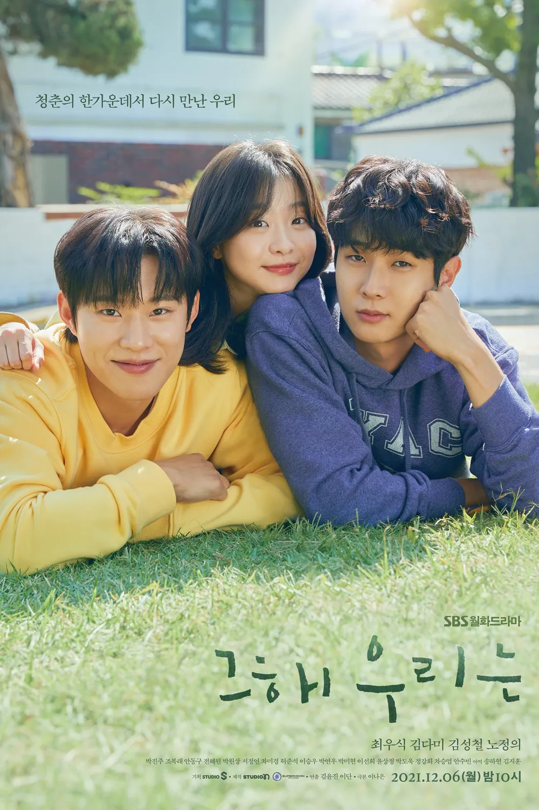

인생 영화 1 - 그 해 우리는
이 드라마는 사춘기 시절의 풋풋했던 사랑 이야기를 떠올리게 한다. 19살에 사랑했지만 5년을 만나다 어쩔 수 없이 헤어져야만 했던 연인을 5년이 지난 후 다시 만나 다시금 사랑을 확인하는 모습이 드라마의 포인트. 극중 메인 인물인 최우식, 김다미의 압도적인 연기력과 김성철, 노정의는 물론이고, 주인공 주변인 역을 맡아 생활연기를 펼치는 조연들의 열연이 돋보인다. 이 드라마의 특징은 특별함보다 현실성이 돋보이는데, 배우들의 감정력 표현이 시청자의 감정을 이끌어내면서 배우들의 연기가 큰 호평을 받고 있다.
감상평